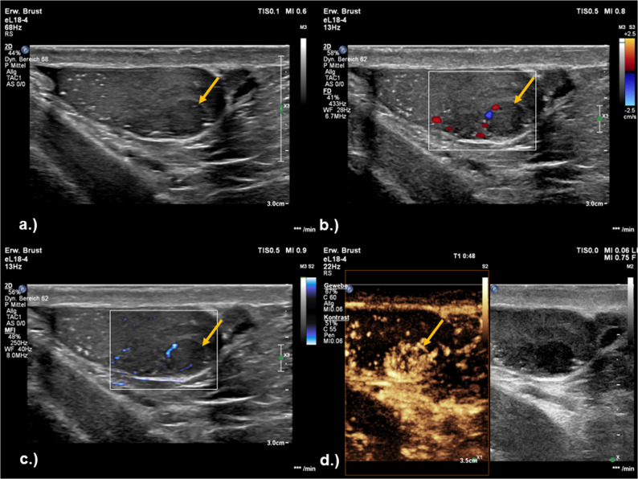

Ficha del catálogo
Tumor germinal testicular
- Sistema
- Reproductor
- Modalidad
- US
- Región
- Testículo
- Dificultad
- Intermedio
Los tumores germinales constituyen la mayoría de las neoplasias testiculares y afectan sobre todo a varones jóvenes. Se dividen en seminomas y tumores no seminomatosos, con comportamiento y tratamiento distintos. Suelen presentarse como una masa palpable indolora, y la criptorquidia es el factor de riesgo mejor establecido.
Técnica
El ultrasonido escrotal con transductor lineal de alta frecuencia es la técnica de elección para detectar y localizar la lesión y para confirmar que es intratesticular. El Doppler valora su vascularización. La estadificación se completa con tomografía de tórax, abdomen y pelvis, prestando atención al retroperitoneo, donde asientan las adenopatías de primer escalón.
Qué observar
- Localización intratesticular de la lesión y su delimitación respecto a la albugínea
- Ecoestructura, homogénea o heterogénea con áreas quísticas y calcificaciones
- Vascularización interna con Doppler color
- Tamaño de la lesión y afectación del resto del parénquima
- Microlitiasis testicular asociada y estado del testículo contralateral
- Adenopatías retroperitoneales en el estudio de extensión
Hallazgos
El seminoma suele ser una masa hipoecogénica homogénea, bien delimitada y con vascularización interna, que puede ser multinodular. Los tumores no seminomatosos son más heterogéneos, con áreas quísticas, necrosis y calcificaciones, y contornos peor definidos. En ambos casos la lesión es claramente intratesticular, dato que la separa de la patología extratesticular, que es benigna en la gran mayoría de los casos.
Perlas
La regla práctica más útil en el escroto es que casi toda masa sólida intratesticular debe considerarse maligna hasta demostrar lo contrario, mientras que las lesiones extratesticulares son casi siempre benignas. Por eso el primer paso del informe es situar con precisión la lesión respecto a la albugínea.
Diagnóstico diferencial
- Orquitis focal
- Cursa con dolor y fiebre, muestra bordes mal definidos y se resuelve con tratamiento en el control.
- Infarto testicular segmentario
- Es una lesión en cuña sin vascularización interna, de instauración dolorosa y que disminuye en controles.
- Linfoma testicular
- Aparece en pacientes mayores, con frecuencia bilateral e infiltrativo, y afecta también al epidídimo.
- Quiste testicular o tumor epidermoide
- El tumor epidermoide muestra capas concéntricas en diana y no tiene vascularización interna.
Simuladores
- Mediastino testicular prominente
- Sarcoidosis o granulomatosis con nódulos intratesticulares
- Hematoma intratesticular postraumático en resolución
Por modalidad
- US
- Es la técnica de elección para detectar y caracterizar la masa y para confirmar su localización intratesticular.
- TC
- Realiza el estudio de extensión, con especial atención a las adenopatías retroperitoneales y al tórax.
Protocolo
Ultrasonido escrotal con transductor lineal de alta frecuencia y estudio comparativo de ambos testículos en dos planos, con Doppler color y medición de la lesión en tres diámetros. La estadificación se completa con tomografía de tórax, abdomen y pelvis con contraste. La determinación de marcadores tumorales séricos antes de la orquiectomía es parte del estudio y ayuda a orientar el subtipo.
Clasificación
La estadificación combina el sistema TNM con la valoración de los marcadores tumorales séricos, de modo que la categoría final integra la extensión local, la afectación ganglionar retroperitoneal, las metástasis a distancia y el nivel de los marcadores tras la orquiectomía. Esta combinación determina el pronóstico y el tratamiento.
Errores frecuentes
- No precisar si la lesión es intratesticular o extratesticular
- Atribuir a orquitis una masa sólida sin control posterior
- Olvidar la exploración del testículo contralateral y de la microlitiasis asociada

tumor testicular seminoma masa intratesticular ecografía escrotal marcadores tumorales retroperitoneo estadificación